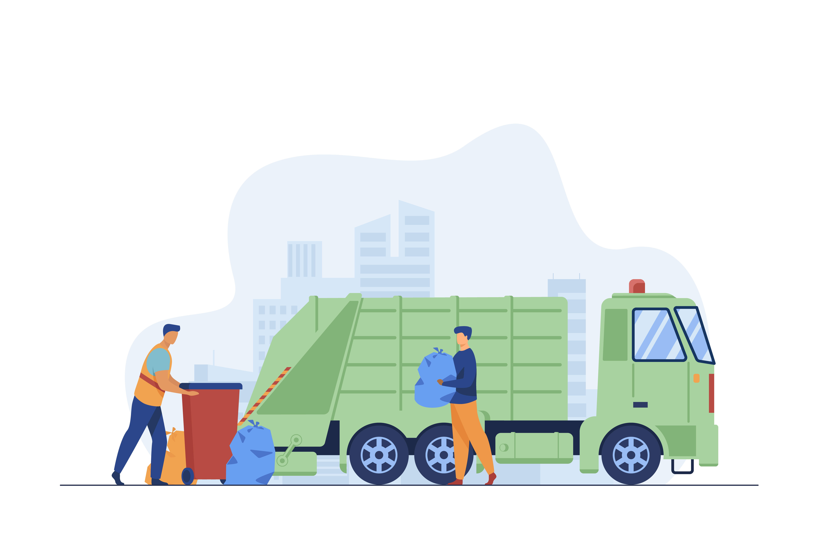

...bringing enlightenment to the public,
working together to keep our earth clean and safe...
What is Waste Management ?

Waste Management is the transport, procesing, recycling and other disposing of waste. It includes all activities and actions required to manage waste from its inception to its final disposal. This includes collection, transport, treatment and disposal of waste, together with mositoring and regulation of waste management process.
Ways to Dispose Waste
Recycling is a great way of getting rid of waste. For example, plastic water bottles can be recycled to work as vases that seedlings can be planted in. This will not only save money, but also beautify our homes when properly decorated
Incineration is also another great way of getting rid of waste. Instead of dumping the waste off at a refuse dump which would lead to pollution, the waste can be burned down at an incineration house. This would only remain minimal traces of the waste, and would be less pollution.
Some of us who have pets at home e.g dogs would understand how economical it is to feed animals with leftovers. Animals are very good converters of food/kitchen waste. It helps to save food that are no longer required. This is done instead of throwing the food away for insects to hover over and cause sickness for man.
Blog
To read more facts about waste management, visit our blog
Did you know?
7 ways of recycling you probably have not thought about before